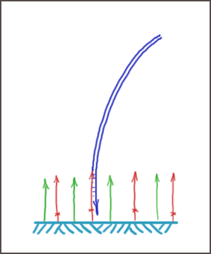

| Second-generation sequencing > Amplification | |
|
Clonal amplification
Bridge amplification (two-dimensional PCR) / Illumina Two-dimensional PCR performed is on Cluster station (Flowcell preparation) and on Genome Analyser (regeneration of clusters for Paired-end sequencing). Here is a scheme for Cluster station amplification. Library deposition Two PCR primers are attached to the surface of flowcell. One of the primers has a cleavable site (cross on red primer);Preamplified library is denaturated in NaOH, then hybridization buffer is added to shift pH to neutral value. Library is loaded into the channel in neutral aquatious solution. DNA molecules can hybridize to the PCR primers. Red primer hybridize with a library molecule on the picture(complementary strand of this molecule have a chance to form a hybrid with a green primer).  Elongation reaction: extension mix (buffer, dNTP's, Taq polymerase) is pumped into a channel. Hybridized primer extended on library molecule. Surface amplificationa Opposite to conventional PCR surface amplification is performed on constant temperature (60°C). Formamide works as a denaturing agent. Normally,35 cycles of pumping: In contrast to normal PCR all solutions are used only for one cycle and then go to trash. It helps to keep low background. Othervise occasionally detached DNA molecule could have a chance to hybridize in another place and start a new cluster there. Surface PCR has lower efficiency if compare with PCR in solution. 35 cycles result in ~1000 copies of the original molecule (in ideal PCR 35 cycles should give ~1010x amplification). The possible reasons of lower efficiency: Formamide Original library molecule is denatured and washed away. Extension buffer Extended molecule bends and hybridizes to a second PCR primer (forms a bridge). Extension mixture Extension of hybridized primer. Formamide washing Two DNA strands are denatured. Extension buffer Extended molecules may hybridize to each other again or find other PCR primers. Extension mixture In the second case they will duplicate again. Formamide washing DNA strands are denatured. ............................. After 35 cycles cluster consists on a number of double-stranded bridges. Flowcell processing After clonal amplification clusters should be converted into single-stranded form and prepared for sequencing. DNA is denaturated.One primer is cut off and washed out. the last operations, which are done on Cluster station are: Emulsion PCR (ePCR) / SOLiD, 454 Amplification reaction is performed in water-in-oil emulsion in the presence of low concentration of library molecules and paramagnetic particles coated by one PCR primer. This PCR primer is also present in the solition but in low concentration: it is enough for early cycles of PCR, but then primers on beads should be involved into amplification. Emulsion may be considered as a large number of independent PCR reactions.
Rolling circle amplification Rolling circle amplification: φ29 DNA polymerase is capable to make up to 103 single-stranded copies of original circle molecule. The multiplication number is significantly different for different templates. So, it is necessary to select only large molecules for sequencing.
Second-generation sequencing
URL: http://seq.zbio.net e-mail: soldatov@molgen.mpg.de visits: Warning: require(/home/molbiol/data/www/vphp/include.php) [function.require]: failed to open stream: No such file or directory in /usr/home/molbiol/domains/molbiol.ru/public_html/seq/ssi/counter.php on line 6 Fatal error: require() [function.require]: Failed opening required '/home/molbiol/data/www/vphp/include.php' (include_path='.:/usr/local/lib/php') in /usr/home/molbiol/domains/molbiol.ru/public_html/seq/ssi/counter.php on line 6 COMMENTS, REMARKS, QUESTIONS Guest /02.03.2009 01:25/ Really
want to thank you for the hand drawings. For some reason, and even
though Illumina has great pictures to explain, these hand drawings
really break things down. Guest /20.10.2009 09:30/ Excellent
hand drawings, I struggled a lot to understand bridge PCR, because
certain steps were never shown in diagrams. Shall be highly obliged if
emulsion pcr is also illustrated the same way. Guest /04.11.2009 15:33/ THANK YOU SO MUCH! maybe ill make my test today thanks yo you:D Guest /28.11.2009 07:34/ Thanks
for the drawings. But is it really necessary to cut one of the primers
to remove all the strands of one orientation? It seems to me that if
all the strands remain, then all the strands will give the same sequence
with a particular primer, it's just that half will be sequenced from
the substrate-proximal side, while the other half will be sequenced from
the substrate-distal side. I will probably use your drawings to show my class; I will credit them to "Soldatov" at your URL. Guest /11.12.2009 08:30/ Could
understand better on Illumina seq. Thanks a lot. Please keep updating
this site with more info on all seq applications from Illumina, solid
and 454 Guest /04.01.2010 12:16/ Guest /28.11.2009 07:34/ - The technology only reads 50-100bp from the start of the strand (Illumina) while the total length of the strands is much longer - you are essentially envisioning paired end sequencing which utilize 2 primers to differentiate which side it is reading: Guest1 /06.01.2010 04:11/ the topic is called - "Second-Generation" Zumbajspil Guest /16.09.2010 07:13/ excellent!!!!!! I love it, very easy to understand Guest /29.03.2011 14:34/ gvg PCRka /29.03.2011 20:08/ Если кто-нибудь знает, подскажите, пожалуйста, недостатки следующих ампликаторов: Амплификатор Analytik Jena SpeedCycler,Германия; Амплификатор C1000 Bio-Rad, США; ДНК-амплификатор Mastercycler ep realplex. Зарание спасибо. -Ъ- /29.03.2011 20:21/ Нет такого научного термина в молбиоле - "ДНК амплификатор" Во всем мире "ТЕРМОЦИКЛЕР", а в России - "амплификатор". PCRka /29.03.2011 21:33/ Что ж, спасибо. Буду знать. Guest /19.04.2011 23:31/ This is awesome. The best explanation I've seen of bridge amplification. Many many thanks! ~a satisfied reader Something,
that you know, is missed on the page. Your colleagues are using this
page. Help them, please. Use "Extended form" to attach images and files
to you message.
|
|
Last modification: 12/12/08 |